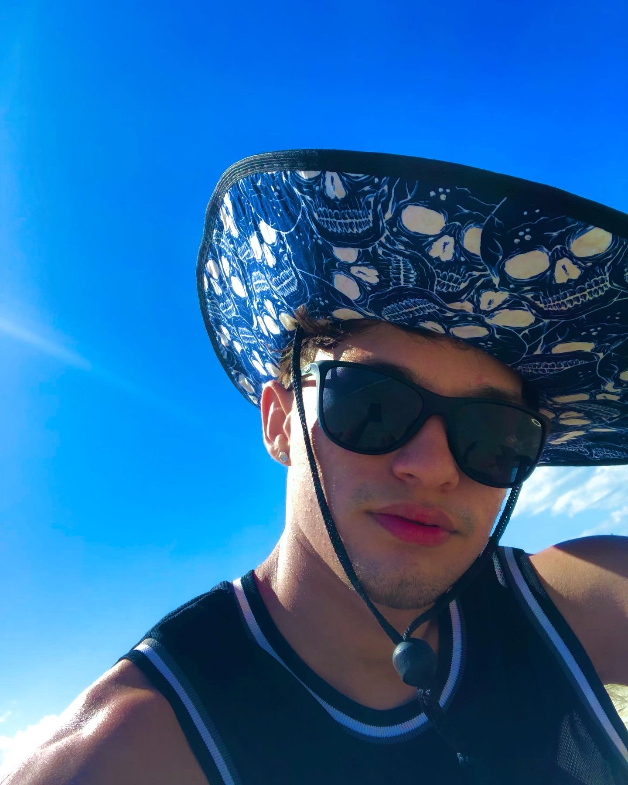

🎬 Filmes Favoritos
Aqui estão os filmes que eu mais gosto:
- Harry Potter
- O Senhor dos Anéis
- O poderoso chefão

Bem-vindo(a) ao meu blog pessoal!
Aqui eu compartilho um pouco sobre as coisas que eu mais gosto, minhas inspirações e o que faz parte do meu dia a dia.
Aqui estão os filmes que eu mais gosto:
Minhas séries preferidas são:
Os pratos que mais gosto:
Quando não estou trabalhando ou estudando, você provavelmente vai me encontrar: